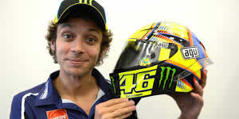
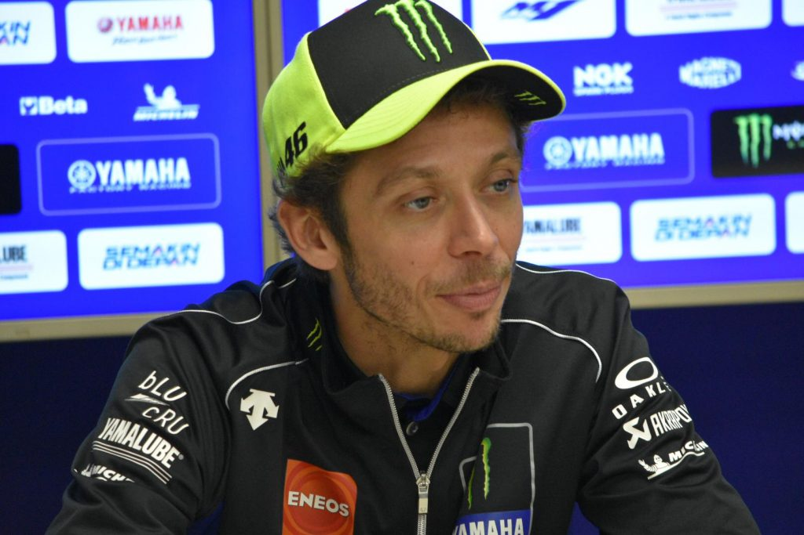
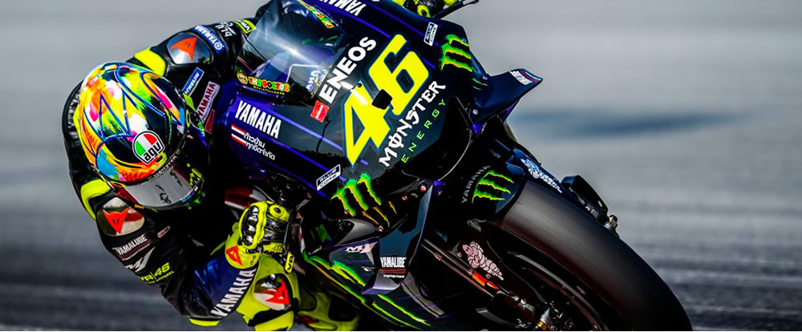
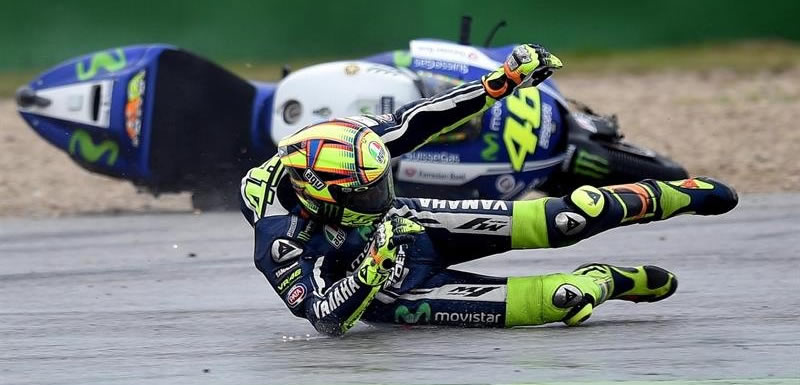
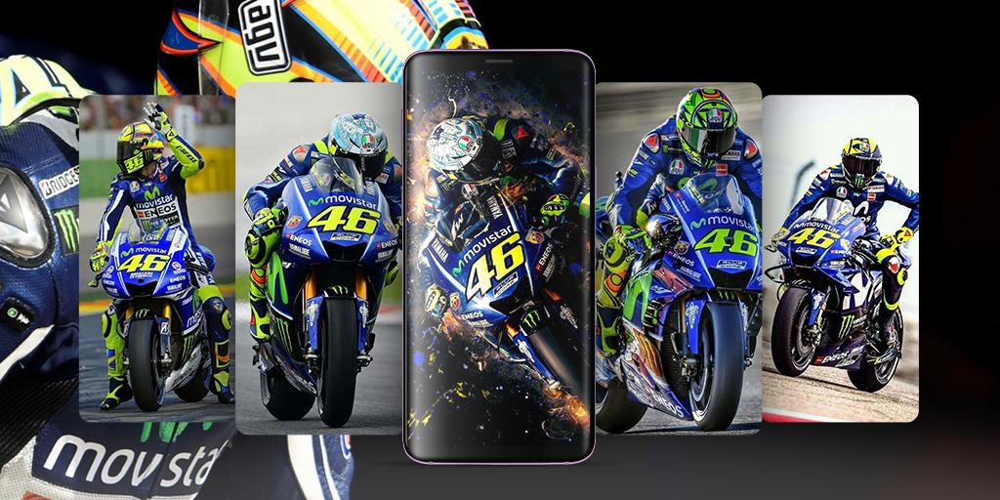
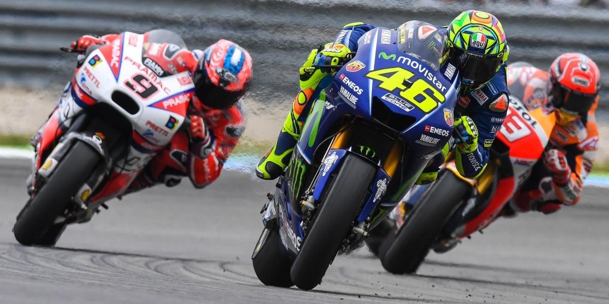

9 Títulos mundiales
1997 -
1999 -
2001 -
2002 -
2003 -
2004 -
2005 -
2008 -
2009

Acerca de mí
Valentino Rossi (Urbino, Italia, 16 de febrero de 1979) es un piloto de motociclismo italiano. Ha ganado nueve títulos mundiales en cuatro categorías: 125cc (1997), 250cc (1999), 500cc (2001) y es hexacampeón de la categoría MotoGP (2002-2005 y 2008-2009).Actualmente, es el piloto con más podios (229) en la historia del Mundial de Motociclismo.
Es conocido por sus excentricidades dentro y fuera de la pista, como por ejemplo vestirse de preso después de una carrera, pintar la moto estilo hippie (esto fue un concurso de Repsol), etc.

Valentino en el circuito de Assen, Holanda
Ha participado en la máxima categoría, con los tres grandes equipos de motociclismo de su momento: Honda, Yamaha y Ducati, siendo desde 2013, piloto del Movistar Yamaha MotoGP.
Valentino Rossi ha utilizado una gran cantidad de cascos a lo largo de su carrera, la mayoría de ellos mostrando el diseño del sol y la luna que significan, según Rossi, los dos lados de su personalidad. El artista que diseña actualmente los cascos de Valentino es Aldo Drudi24 y gran parte de su colección ha salido bajo la marca de cascos Amisano Gino Valenza (AGV).
El 3 de agosto de 2007 la agencia de impuestos de Pesaro acusó a Rossi de no haber declarado impuestos por sus ganancias entre 2000 y 2004. Según dijeron los oficiales italianos, su residencia en Londres le permitía tomar ventaja de ciertas situaciones como era sólo estar obligado a declarar las ganancias hechas en Inglaterra.
Noticias relacionadas

Caídas muchas...

Productos de Valentino muchísimos
